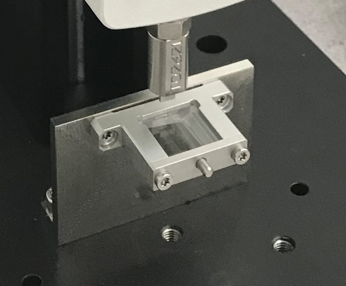
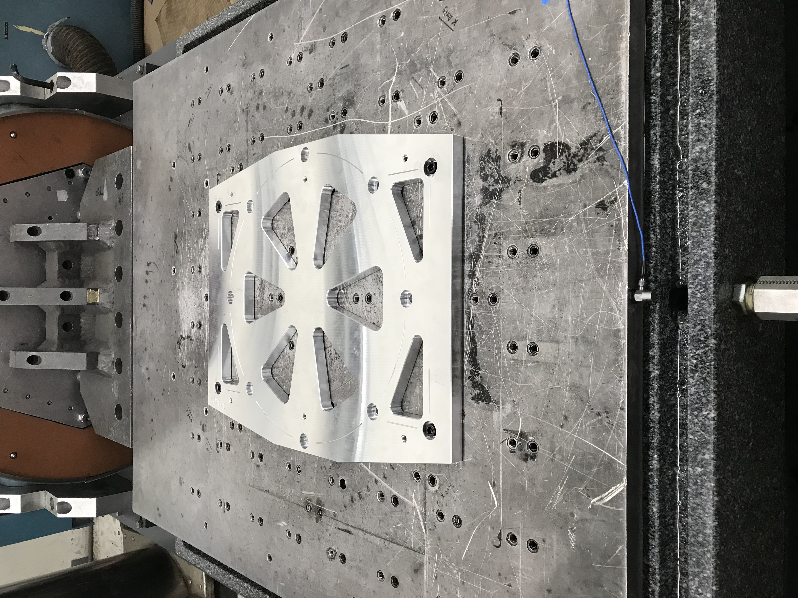
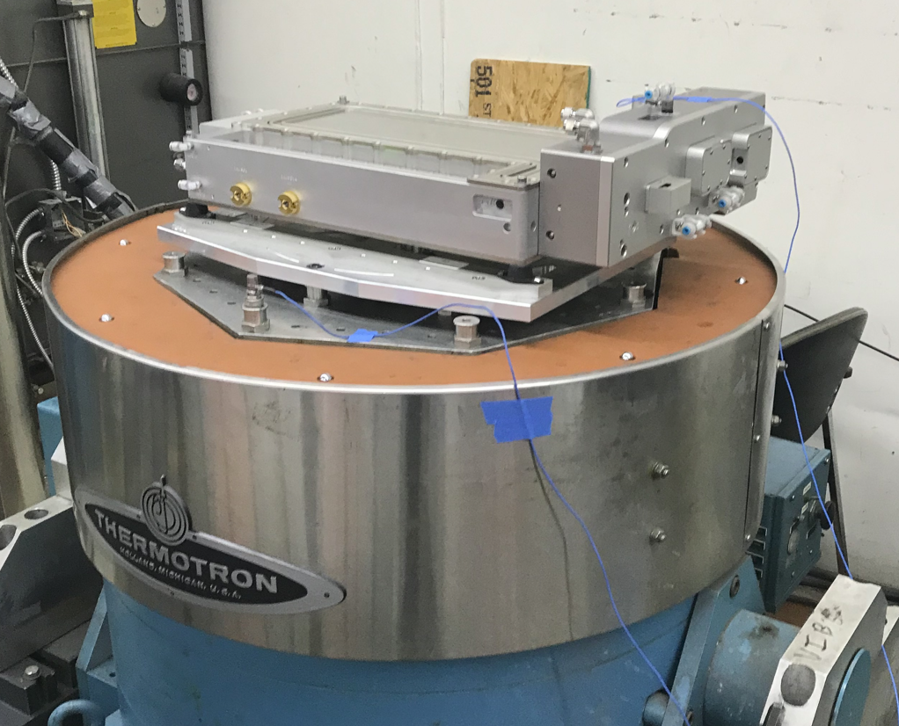
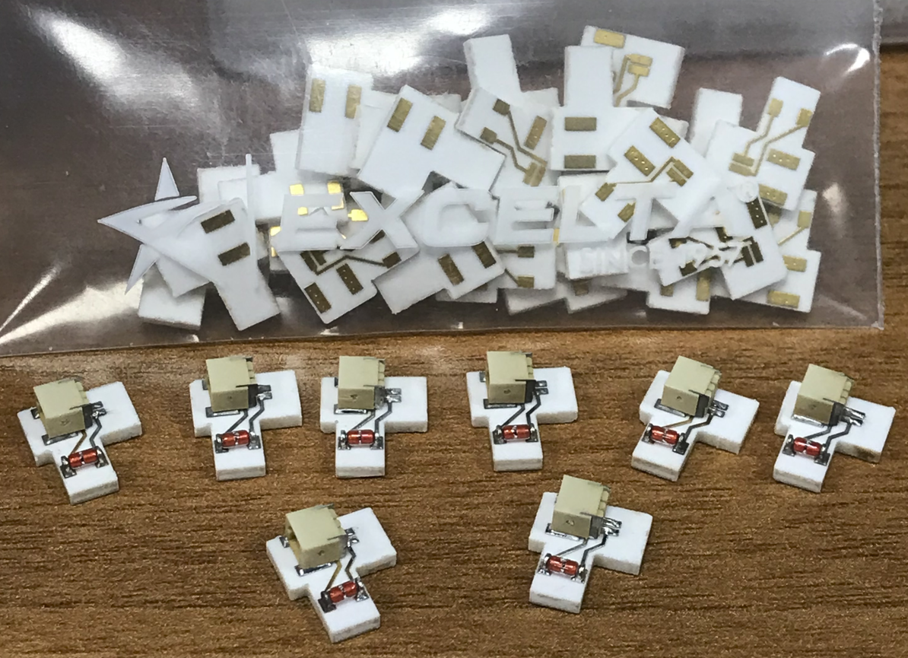
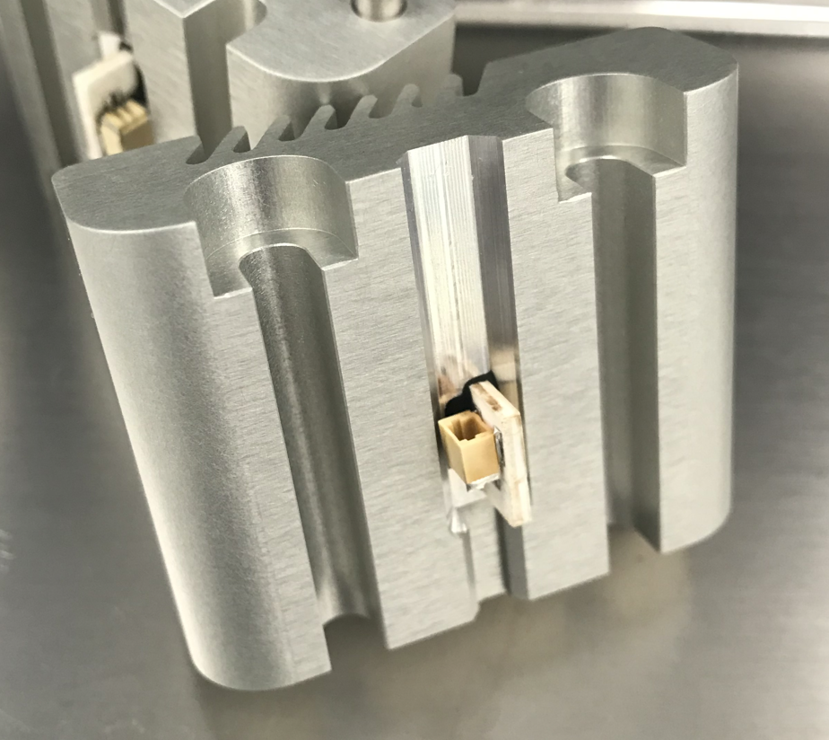

Part and Fixture Design - Laser Engine System

At Teradiode, I worked on the design, testing, and manufacturing of optoelectronic components packaged in the blue diode laser engine system, represented in the image to the left. I designed adjustable optical mounts for laser alignment and many installation fixtures for assembling the optical mounts properly. I also managed part and assembly revision for the 1000+ part laser engine assembly in SolidWorks and Omnify (Arena). I did this effectively and efficiently, allowing for quick product releases with attention to the minute details in varied laser engines.
Optical Mounts & Fixtures
I helped with the design of optic mounts ensuring they met GD&T standards becasue of the tight tolerance required for a high powered laser system. In this picture, the optic is being stress tested with a manual force compression device. The mount is securely fastened to the test fixture I also designed.
Shock and Vibration Testing
I designed an adapter plate to complete shock and vibration testing for the laser blade in multiple orientations.
Custom PCB Thermistor Project
I worked closely with electrical engineers to design a custom PCB thermistor for monitoring system temperatures in the laser. Through careful design and consideration we were able to create a working prototype with the first batch of custom PCBs received.

Installation
I designed an installation fixture to aid in the heat sink assembly. The fixture held the PCB thermistor in position while a high temperature epoxy was applied. The fixture and the heat sink were baked in an oven to properly cure the epoxy.
Heat Sink Testing